LISBON
DAY 1
The story starts in the check-in area of Toulouse airport. We boarded on a 2 hour flight to Lisbon. This would be our first time in Portugal, I couldn't be more excited. Arrival was scheduled in Lisbon late in the afternoon, around dusk. I was really looking forward for this trip, Portugal was number one on my "to go" list for a really long time. Eyes set on the window, waiting to see the ocean for the very first time. Finally, there it is, I can see the blue in the distance. At the same time the capital shows itself, tiled roofs, all in red, spread everywhere cutting through the hills. On the one side, traditional Portuguese architecture and on the other modern high-rise buildings, state-of-the-art stadiums and two breathtaking bridges connecting the shores of Tagus river (Tejo in Portuguese). A city united in diversity. The airplane approached Portela airport as we were craving for a new adventure. We collected our luggage from the carousel and headed to the airport metro station. The Portuguese were more than happy to help us with the tickets. We issued a two-day card and hopped on a train. That was the moment I started listening carefully to the locals speaking their native language. Someone took Spanish and silenced all the vowels, there you have it, Portuguese was born. To be honest, it sounded bizarre, it was nothing like other Latin languages. The people who were speaking it though seemed cheerful, so my ears were happy too.
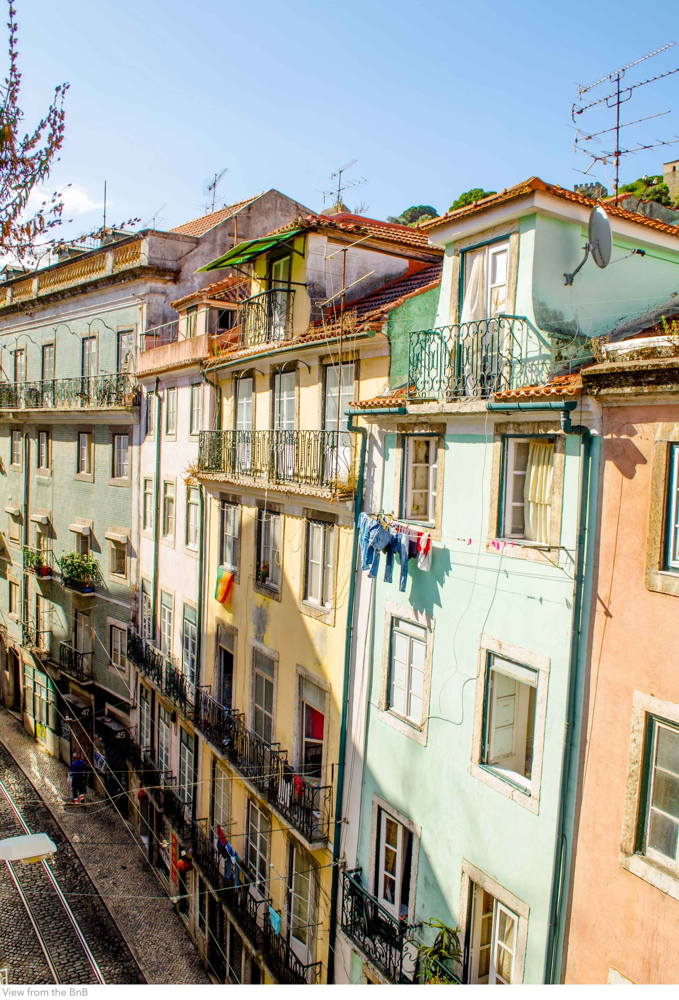Twelve stations and two lines' changes later, we found ourselves in Martim Moniz square. It was dark out, but still, the city's beauty was obvious. Most buildings adorned with Azulejos (traditional tiles) in every shape and colour. The houses were alike but in the same time each one maintained its character. I checked the BnB's location on my cell phone and it showed us the way. The uphill road towards the Castelo de São Jorge. An alley paved with stone and the tramway track in the middle, so picturesque it could be in a Lisbon carte postale. As we reached the house, a tall, wooden, centuries old door appeared before us, the house on the outside was just as I pictured it, old and lovely. The host appeared on her balcony, welcomed us and opened the door. We entered the building, no elevator to be found, I didn't expect one to be honest. The stairway was made of wood, crack sounds made us worry a bit as we walked all the way to the 4th floor with the bags on our hands. The host warmly greeted us and showed us the room. In rapture, I realised it was a penthouse, the room had a slanted ceiling with small windows that gave a super cozy feel. The room was surely worth it.
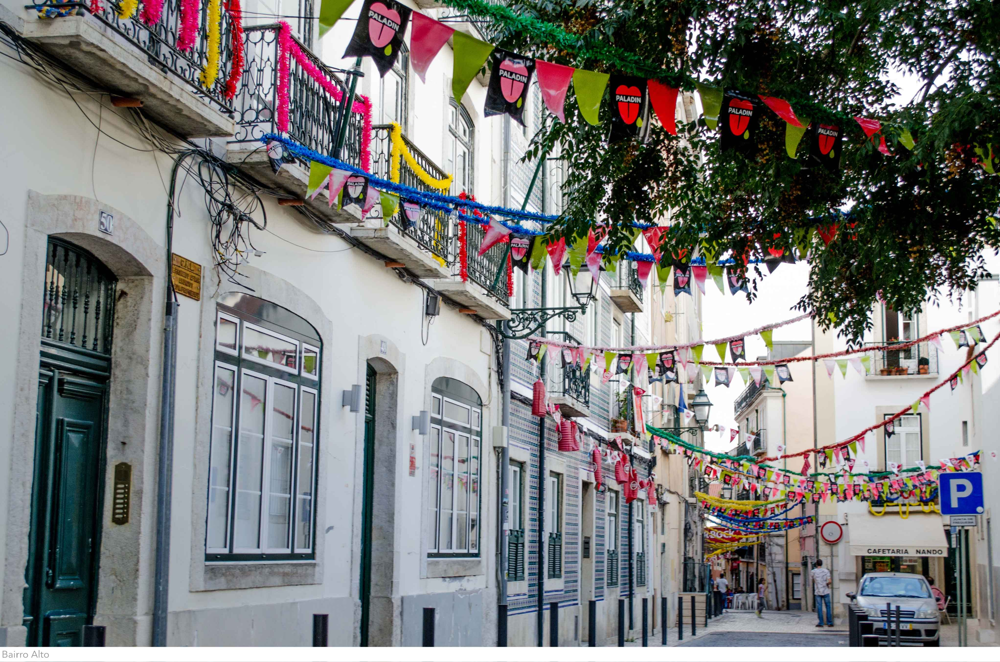Even though we were super tired from the flight we couldn't stay in, we had to see the city. We got ready and following our host's recommendation we headed to the Bairro Alto (pronounced Baiho Alto) neighbourhood. One stop for something to eat in whatever we found open and we were off. The district, like the most of this city, is on a hill, but I was so excited to walk around a city new to me I didn't mind walking at all. The neighbourhood was so vibrant. Bars and pubs in every corner with people standing outside drinking their beverages, Lisbon is alive 24/7. Although a drink sounded intriguing, we decided to walk down the hill towards the river. It was one of the rare times I didn't track our location through the maps app on my phone. I was that much stress-free. All of the sudden, as we thought we were still in Bairro Alto, we saw the 25 de Abril bridge (the Golden Gate twin), right at the point where the river meets the ocean. "Always happy by the sea" this is a quote that speaks to my heart, nothing can relax me more. After gazing for a while, we took the way back from Comércio square through the centre and got to the house. So tired at that point, all I could think was the bed. I immediately slept. The next day is already planned in my mind.
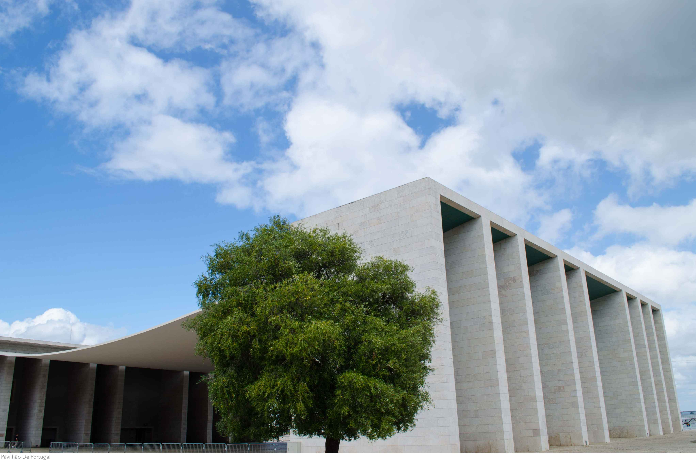DAY 2
Second day kicked off in Lisbon with a list filled with places we want to visit. Woke up around 9 am, stormed right away out of bed and got to the balcony. The view I was waiting for. Cute colourful houses in my sight, so close gives you the impression the buildings are built on top of one another. I put my jean shorts and a t-shirt on, washed my face and we're off the building. After a quick search on Foursquare, I found a cool place nearby to have brunch. We needed to change our batteries and start the day right. Since it was really close to the house, we walked there. A nice hipsterish cafe in a small square at the slope of S. Jorge hill with some tables and a giant tree keeping the sun rays away. Just what we desired. Had an avocado toast with some fresh homemade lemonade. Detoxed for real! Grabbed glasses, camera and phone and left the cafe heading to the promenade. With the sun glowing above us, the city's beauty showed its best face. At the time, I came to notice the artistic face of Lisbon. Graffiti, murals and every form of street art in each corner.
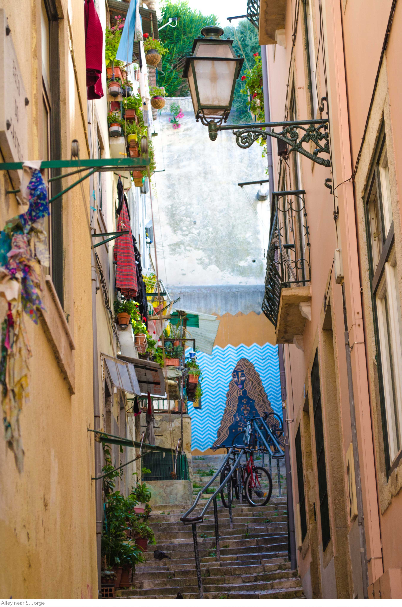In less than ten minutes we were back at the Comércio square. From there, we took the bus to the Belém district on the west. First stop, the MAAT museum. It's the newest and most modern in Lisbon, opening just two years ago. Architecture, technology and art combine here to revive the underdeveloped industrial port area. I did my search for that before coming. Stunning waterfront just by the amazing facade of the museum, in the background you could see the red bridge standing tall and even further on the other side of the river, the Christ Statue overlooking the harbour.
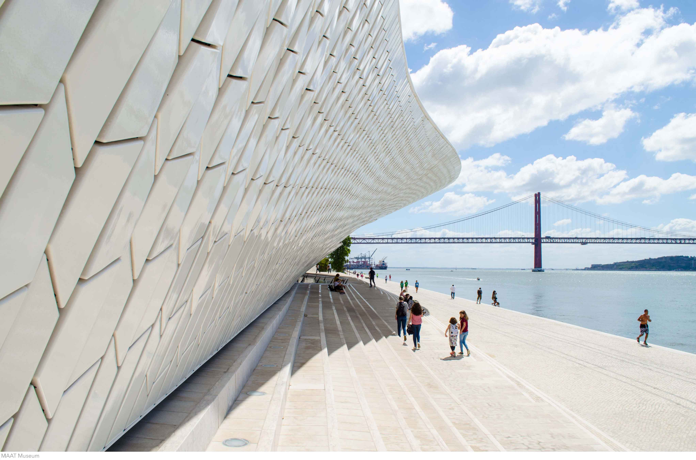We walked towards the ocean following the Tagus stream. Right beside us, people were jogging, exercising and riding their bikes peacefully. After all, it is apparent that this is one of the coolest places to spend your time in the city. Five minutes later, we reached the Monument of the Discoveries. Here, statues of great Portuguese sailors celebrate the years when they conquered the seas spreading their culture from Brazil to India. Portugal is a nation traditionally dominating the oceans of the world. After sitting there for a while, enjoying the ocean breeze and the shadow the monument provided, we said goodbye to the explorers to continue our walk.
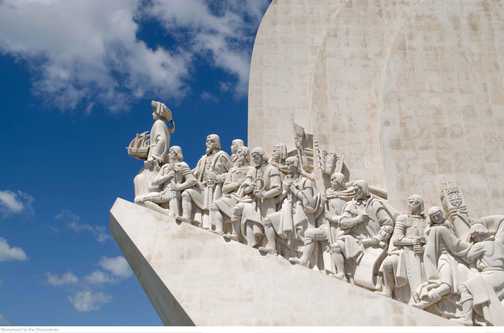We kept heading to the Atlantic. Our goal was to reach the famous Belém tower, and we did. Standing there in the mouth of the river surrounded by water and rocks. People were flocking to enter the tower. A line so long, Louvre could get jealous. To be honest, we didn't think it was worth the wait, so we resumed our explorations. Ahoy!
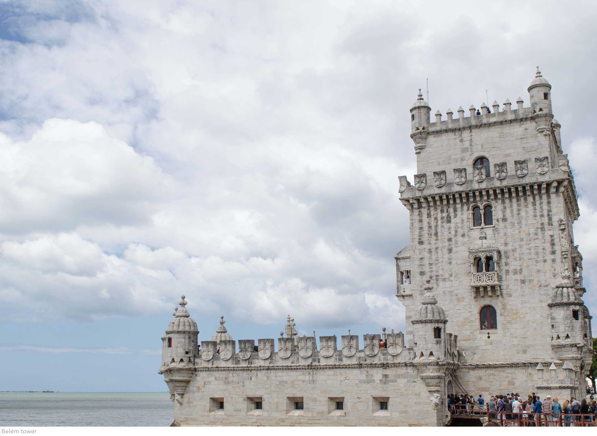Even though I love the metro, with a bus you can see the city better. You don't have to take the fancy, super expensive, open top tourist bus to do this though. A regular one can do the work. So, after a small search we found a bus line that could get us where we wanted, travelling through the important neighbourhoods of the city. Some minutes later, the bus arrived. It was the best choice, the line was bypassing the city centre going through the Universidade de Lisboa campus, the famous for its football club Benfica neighbourhood, the same team's gigantic stadium and finally after an hour or so the Gare do Oriente.
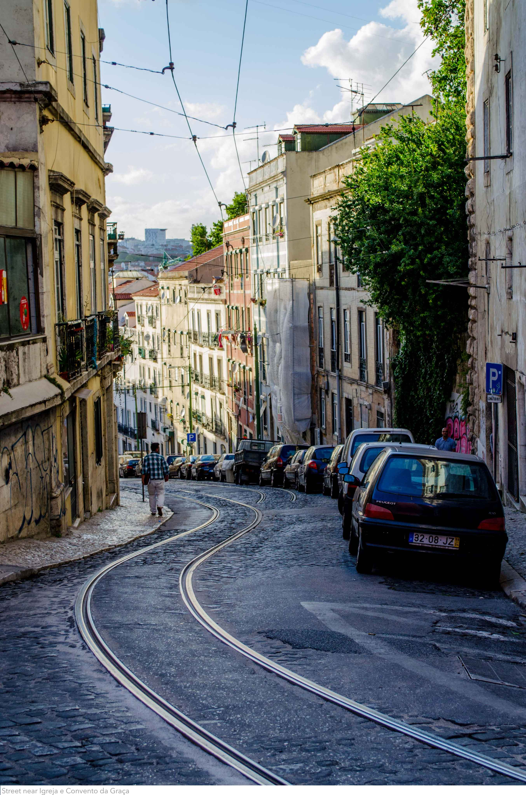The central station of Lisbon strikes your eye immediately. Combining perfectly metal and glass, designed by the world famous Spanish architect Santiago Calatrava, it's the central hub of the city. On the main floor covered grey walls made of concrete support the bulding letting cracks so that the sun can light up the space. One more photogenic, instagram-friendly place in this city.
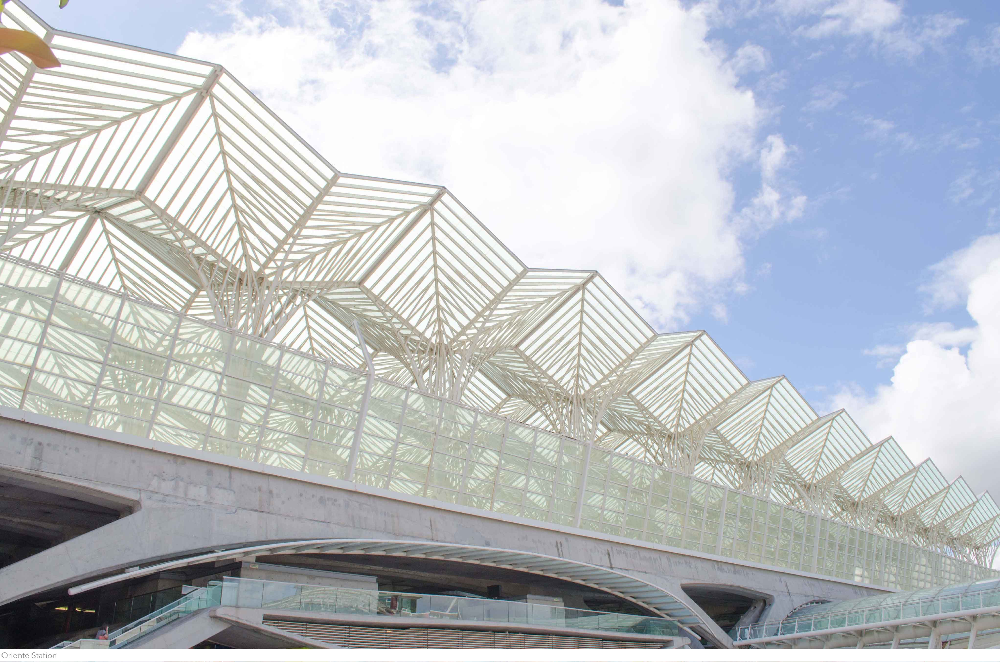 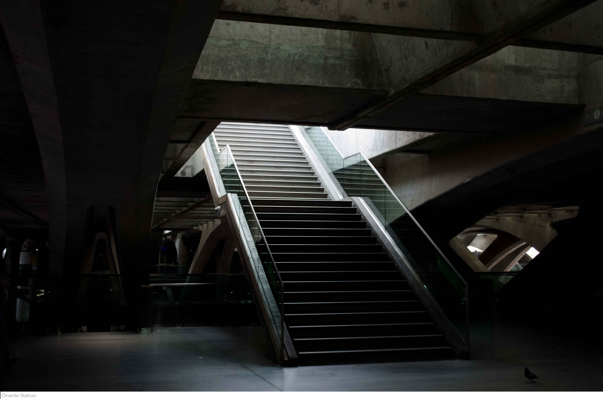We had an espresso and a little sweet before we resumed our tour. Just in front of the station, on the north side of the river the 21st century capital paves the way to the future. Skyscrapers, towers and brand new high-rise buildings dominate the sky. Just before them stands one of the longest bridges in Europe (12km long) , Vasco da Gama bridge, the second of Lisbon. This side of the city is entirely different from the rest. As we walked to the waterfront, we looked up to the sky, a cable car was passing above our heads. Stood there and watched people come and go. Peace in my mind.
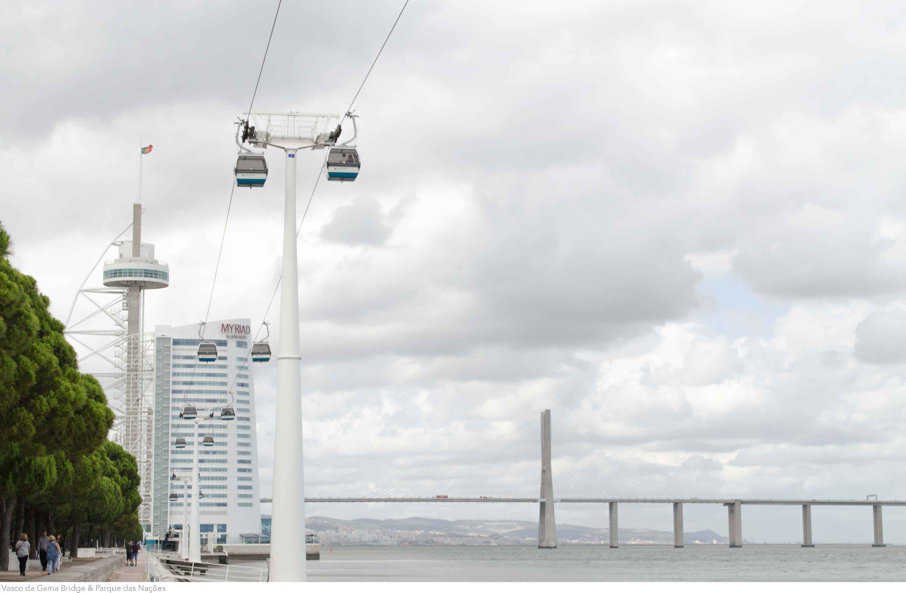Past lunch time, led by our hunger we hopped on a train and got back to the city centre. A very promising place with Brazilian cuisine caught our eyes, not the best idea after all. The food was just ok, we should have searched a little more, I guess. With our bellies full, we walked again uphill just by the tram lines with the old yellow cabs passing right in front of us with doors open. Following the track we found a small square in Santa Catarina with a panoramic view of the Tagus delta. Street musicians were playing as locals and travellers enjoyed them, drinking their beers. We sat there for a while and then decided to find the best view of Lisbon. Not that this one wasn't good enough, we just wanted a place where nothing could block our sight. I looked around and searched for a hill taller than others. "That's the one!" I said with my expectations rising high. And so, we set our new goal.
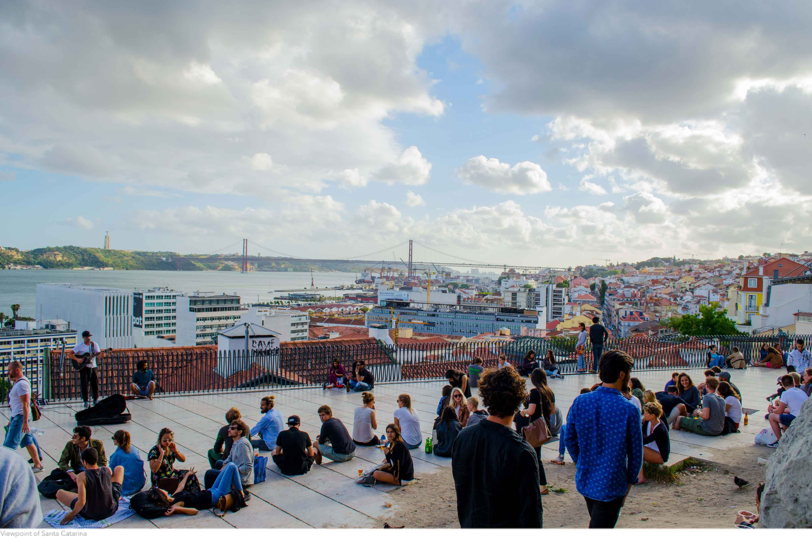After some ups and downs here we were at the Viewpoint of Sophia de Mello Breyner Andresen, the best view of Lisbon! You could see everything from up here, the city in your hands. Stood there and took some photos as the sun set behind Bairro Alto.After that, it was high time we went back home, so we did. Some relaxation time before we head outside for the last time.
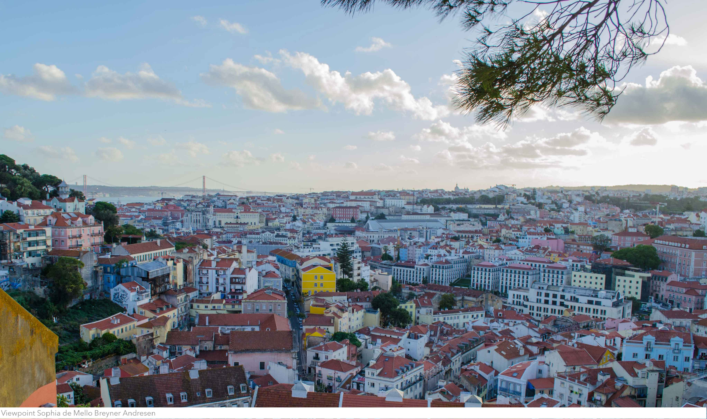The night fell smoothly in a warm, yet humid atmosphere. We strolled to the neighbourhood near Intendente station searching for a cool place to have a drink. A small bar in a pedestrian zone paved with the traditional mosaics where people were provided with towels as the night dropped the temperature below 20C. The time came we were to have our first sip of alcohol in Portugal. Some wine and bread sticks were essential for our hydration. We finished off our drinks and returned home. Our next flight to Ponta Delgada was scheduled early in the morning. The amazing two days in the capital came to an end. Farewell Lisbon, you've been real.
WHERE TO GO
Parque das Nações (Park in the north)
Estação do Oriente (Station near the park)
Pavilhão De Portugal (The Portuguese pavilion for the International Expo)
Miradouro de Santa Catarina (Viewpoint where locals hang out)
Viewpoint Sophia de Mello Breyner Andresen (Best view of Lisbon)
Padrão dos Descobrimentos (Monument of the discoveries at the port)
Torre de Belém (Tower at Tagus mouth)
MAAT Museum (Museum of Art, Architecture and Technology)
Elevador de Santa Justa (Gigantic elevator in the centre)
HOW TO GET THERE
The city is walkable and Public transportation (Metro, Bus, Tram) is everywhere.
The only airport of the city is just 9km away and accessible with the Metro.
TIPS
Talk to the locals. Most of them are eager to help you find the best places Lisbon.
"Obrigado"=Thank you and "Bom dia"=Good morning. Use these words.
Avoid crowded places and don't follow other tourists. Search the city by yourself.